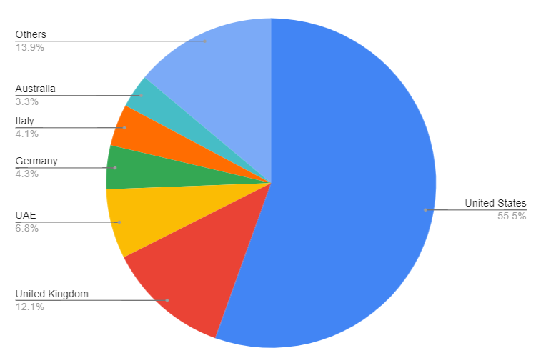

The Numbers: The Evacuees Successfully Rescued

Note: Pie chart constructed in GSheets using values in Table 1.
Description. Using data from both Kessler (2021) and the Reuters staff (2021), here is a table containing the number of rescued evacuees for each country that participated in the effort.
| Country | Number of Evacuees | Percentage (%) |
|---|---|---|
| United States | 69,000 | 55.496 |
| United Kingdom | 15,000 | 12.064 |
| UAE | 8,500 | 6.836 |
| Germany | 5,347 | 4.301 |
| Italy | 5,100 | 4.102 |
| Australia | 4,100 | 3.298 |
| Others | 17,287 | 13.904 |
| Total | 124,334 | 100.00 |
Infographics: Evacuees Rescued per Day
From August 16 to 18
From August 19 to 21
From August 22 to 25
From August 26 to 29
Note: All infographics for the number of evacuees rescued are from a news article written by Howe (2021).
Social Media Links (for contact, feedback, query, etc.):